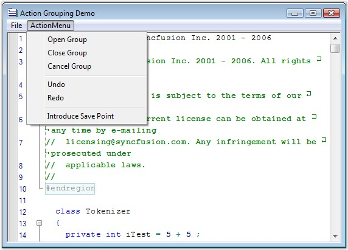

Action Grouping allows you to specify a set of actions as groups for Undo / Redo purposes. When an action group is created, and a set of actions is added to it, the entire set is considered as one entity. This implies that the set of actions can be performed or undone using the Redo or Undo method call. You can use the UndoGroupOpen, UndoGroupClose and UndoGroupCancel methods to programmatically manipulate the undo / redo action grouping.
Grouping Actions
To undo/redo an action group, do the following steps:
1. Invoke the UndoGroupOpen method to begin a new action group.
2. Perform any desired set of actions, and invoke the UndoGroupClose method to close the action group. All the actions performed between the UndoGroupOpen() and UndoGroupClose() method calls get grouped as one entity.
3. Now, when the Undo / Redo methods are invoked, the newly created group (or set of actions) gets undone / redone appropriately.
4. To cancel an already open action group, you have to invoke the UndoGroupCancel method.
5. The CanUndo property gets a flag that determines whether the undo operation can be performed in the Edit Control.
6. The CanRedo property gets a flag that determines whether the redo operation can be performed in the Edit Control.
Unlimited Undo and Redo
Essential Edit supports multiple levels of undo / redo, whereas the default Edit Control in Windows Forms supports just one level of undo / redo. This makes Essential Edit a better choice for all your editing needs. The ability to undo and redo changes in Essential Edit improves the usability of any application that has any form of text editing.
Essential Edit allows the following methods to be invoked any number of times.
|
Edit Control Method |
Description |
|
Undo |
Performs an undo operation. (CTRL+Z) |
|
Redo |
Performs a redo operation. (CTRL+Y) |
|
CanUndo |
Indicates whether it is possible to undo the actions in the Edit Control. |
|
CanRedo |
Indicates whether it is possible to redo the actions in the Edit Control. |
|
ResetUndoInfo |
Clear the undo buffer. Hence undo operation is not allowed on contents/actions previously added/performed up to that point. |
 Note: The undo/redo buffer is cleared after the
'Save' operation.
Note: The undo/redo buffer is cleared after the
'Save' operation.
Enabling Grouping
Grouping is enabled using the below given property.
|
Edit Control Property |
Description |
|
GroupUndo |
Specifies whether grouping should be enabled for undo/redo actions. |
|
[C#]
// Accomplish Undo operation. this.editControl1.Undo();
// Accomplish Redo operation. this.editControl1.Redo();
// Indicates whether it is possible to Undo in the Edit Control. bool canUndo = this.editControl1.CanUndo;
// Indicates whether it is possible to Redo in the Edit Control. bool canRedo = this.editControl1.CanRedo;
// Clears the Undo buffer. this.editControl1.ResetUndoInfo();
// Enable grouping for Undo / Redo actions. this.editControl1.GroupUndo = true; |
|
[VB.NET]
' Accomplish Undo operation. Me.editControl1.Undo()
' Accomplish Redo operation. Me.editControl1.Redo()
' Indicates whether it is possible to Undo in the Edit Control. Dim canUndo as bool = Me.editControl1.CanUndo
' Indicates whether it is possible to Redo in the Edit Control. Dim canRedo as bool = Me.editControl1.CanRedo
' Clears the Undo buffer. Me.editControl1.ResetUndoInfo()
' Enable grouping for Undo / Redo actions. Me.editControl1.GroupUndo = True |
The following screen shot shows action grouping in Edit Control.

Figure 9: Grouping Actions in Edit Control
A sample which demonstrates Action Grouping is available in the following sample installation location.
..\My Documents\Syncfusion\EssentialStudio\Version Number\Windows\Edit.Windows\Samples\2.0\Advanced Editor Functions\ActionGroupingDemo